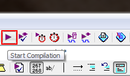

Quartus IIの使用方法 - 加算器のFPGA実装
はじめに
ここでは，Quartus IIを用いたFPGA開発の手順について解説していきます． 組合せ回路の基本である桁上げ伝搬加算器をVHDLで記述し，RTLシミュレーションで動作を確認した後にTerasic DE0に実装してみます． VHDLでの回路設計に関する解説は割愛しますが，記述例を掲載しますのでご覧ください． FPGA開発ボードが手元になくても，RTLシミュレーションでHDL記述の動作を確認できるので，HDLの勉強の参考にもなるのではないでしょうか．
初回の加算器の作成では，Quartus IIのプロジェクト作成から加算器の記述までについて解説しました． 前回の加算器のRTLシミュレーションでは，Quartus IIとModelSimの連携と，ModelSimを用いたRTLシミュレーションの実行について解説しました． 本ページでは，加算器のFPGA実装に向けたピン配置などの設定と，プログラム方法について書いてみたいと思います．
以降で掲載するスクリーンショットは下記の環境のものです． Quartus IIのインストール方法についてはこちらをご覧ください．
| OS | Microsoft Windows 7 Professional x64 Service Pack 1 |
|---|---|
| Quartus II | Altera Quartus II 12.0sp2 Web Edition |
| ModelSim | Mentor Graphics ModelSim-Altera Starter Edition v10.0d Service Pack 2 |
Pin Plannerによるピン配置
Quartus IIを起動し，プロジェクトを開いた状態から始めます． コンパイルとRTLシミュレーションを繰り返し， 文法エラーや意図しない動作がないことは確認済みであるものとします． 左上の「Assignments」から「Pin Planner」を選択します．
{kind=link}
「Pin Planner」ウィンドウが開きます．下部の表の「Node Name」には，回路記述上で使用している入出力ピン名が並んでいると思います． ここでは，各入出力ピンを実際のFPGAのどのピンに割り当てるかを設定します． DE0に付属しているユーザマニュアルにFPGAのピン名と周辺回路との対応関係が掲載されていますので，ユーザマニュアルを見ながら設定を行ってください． 今回は加算器の入力計9bitをスライドスイッチ9個に，出力計5bitをLED5個に割り当てました． 一応，割り当て表を掲載しておきます．
| Node Name | Direction | Location (FPGA Pin No.) | Description |
|---|---|---|---|
| A[3] | Input | PIN_G4 | Slide Switch[3] |
| A[2] | Input | PIN_H6 | Slide Switch[2] |
| A[1] | Input | PIN_H5 | Slide Switch[1] |
| A[0] | Input | PIN_J6 | Slide Switch[0] |
| B[3] | Input | PIN_E3 | Slide Switch[7] |
| B[2] | Input | PIN_H7 | Slide Switch[6] |
| B[1] | Input | PIN_J7 | Slide Switch[5] |
| B[0] | Input | PIN_G5 | Slide Switch[4] |
| CI | Input | PIN_E4 | Slide Switch[8] |
| CO | Output | PIN_F2 | LED Green[4] |
| S[3] | Output | PIN_H1 | LED Green[3] |
| S[2] | Output | PIN_J3 | LED Green[2] |
| S[1] | Output | PIN_J2 | LED Green[1] |
| S[0] | Output | PIN_J1 | LED Green[0] |
各ピンの「Location」列をダブルクリックすると，選択肢のプルダウンメニューが表示されるので，対応するピン名を選択してください． ピン配置の設定が終わったら，Pin Plannerを閉じましょう．

Pin Plannerによるピン配置設定は大変面倒であることがわかっていただけると思います． 共通の入出力ピン名を使用して異なる回路を記述する予定がある場合は，今回のピン配置設定をエクスポートして，異なるプロジェクトにインポートすることも可能です． ピン配置設定を省力化できるので便利です．
Pin Plannerの「File」から「Export」を選択します． この作業で出力される設定ファイルはcsv形式ですので，エクスポート後もテキストエディタやExcelなどで簡単に編集できます．
{kind=link}
プロジェクトにピン設定をインポートしたい場合は「Assignments」の「Import Assignments...」を選択しましょう．
{kind=link}
次に，未使用ピンについての設定を行います． Quartus IIのウィンドウ左側のエンティティ一覧に表示されているのデバイス名を右クリックし，「Device...」を選択します．
{kind=link}
「Device」ウィンドウが開くので，中央付近の「Device and Pin Options...」を選択します．
{kind=link}
「As output driving ground」に変更します．
{kind=link}
コンパイルを実行します． 警告が十数個出ますが，無視できる内容だと思います． これでFPGAに実装する準備が整いました．
{kind=link}
FPGAに実装する - USB-Blasterの準備
DE0にプログラムするためには，USB-Blasterのドライバのインストールを完了しておく必要があります． DE0とPCをUSBケーブルで接続し，DE0の電源を投入すると， 「デバイス マネージャ」に「USB-Blaster」が表示されるので，「ドライバ ソフトウェアの更新」を行ってください． ドライバは以下のフォルダにあります．
| C:\altera\12.0sp2\quartus\drivers\usb-blaster |
FPGAに実装する - プログラム
DE0とPCをUSBケーブルで接続し，DE0の電源を投入してから，下図に示すアイコンを選択して「Programmer」を起動します．
{kind=link}
「Programmer」が起動します． 「Hardware Setup...」の横に「USB-Blaster [USB-0]」と表示されていることを確認します． 「No Hardware」と表示されている場合は，「Hardware Setup...」を選択して， 「Currently selected hardware:」を「USB-Blaster [USB-0]」に変更してください． 「USB-Blaster [USB-0]」が選択肢にない場合は，Quartus IIのインストールに失敗している可能性があります． 下記に解決策の1つをまとめましたので，ご一読ください．
「Mode」は「JTAG」になっていること，「Program/Configure」にチェックが入っていることを確認したら，「Start」を選択します．
{kind=link}
「Progress:」が「100% (Successful)」になればプログラム完了です．
{kind=link}
スライドスイッチを操作して，LEDの点滅との対応を確認し，回路記述が正しいか確認しましょう．